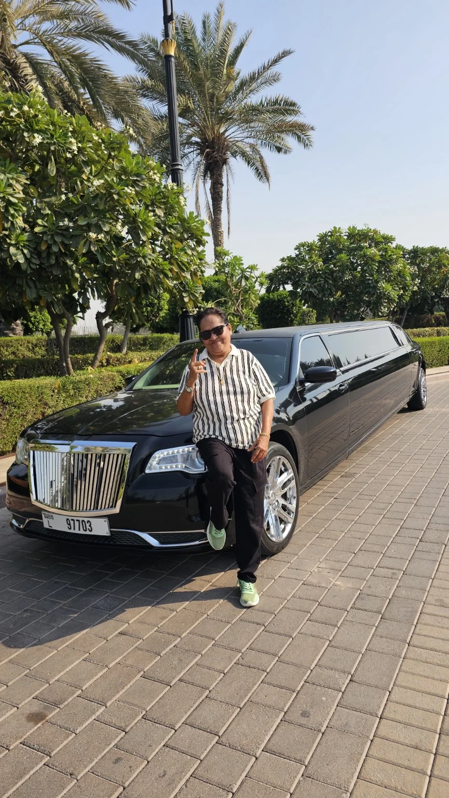
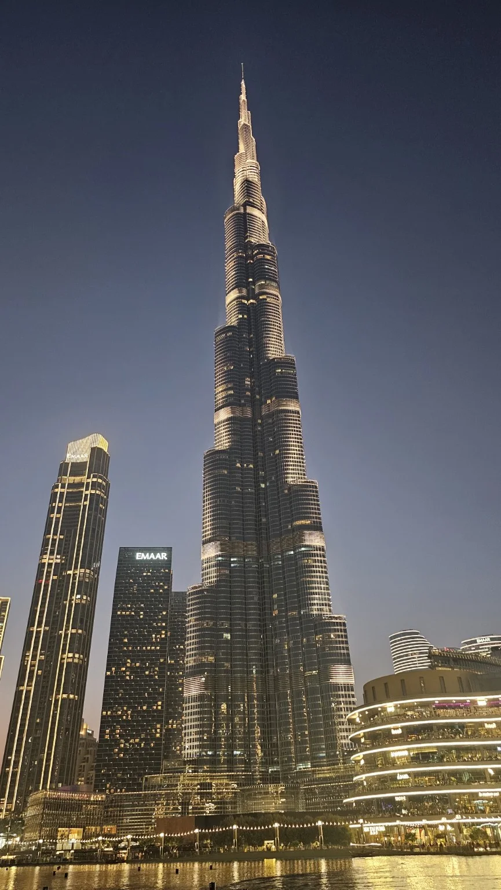
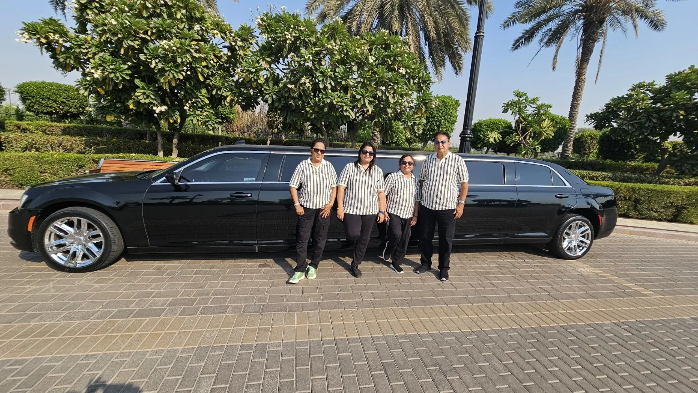

दुपारी २ वाजता | हॉटेल रामदा ते बुर्ज खलिफा
दुपारची सुरुवात एका खास अनुभवाने
दुबईतील आमच्या प्रवासाचा चौथा दिवस. दुपारी बरोबर दोन वाजता आम्ही हॉटेल रामदाहून लक्झरी लिमोझिन—क्रायस्लर कारने—बुर्ज खलिफाच्या दिशेने निघालो. प्रवासाची सुरुवातच इतकी आल्हाददायक होती की, आजचा दिवस काहीतरी विशेष आठवण देऊन जाणार याची जाणीव होत होती.

रस्त्यांवरील स्वच्छता, शिस्त, सुंदर हिरवाई आणि आजूबाजूची भव्य वास्तू पाहत आम्ही दुबई डाउनटाउनमध्ये पोहोचलो. प्रत्येक गोष्ट नीटनेटकी, नियोजनबद्ध आणि देखणी दिसत होती.
बुर्ज खलिफा – आकाशाला भिडलेला अद्भुत अनुभव

बुर्ज खलिफा समोर उभा राहिल्यावर त्याची उंची प्रत्यक्ष डोळ्यांनी पाहण्याचा अनुभव शब्दांत सांगणे कठीण आहे. तब्बल ८२८ मीटर उंच असलेली ही वास्तू जगातील सर्वात उंच इमारत म्हणून ओळखली जाते. तिचे बांधकाम Emaar Properties यांच्या विकासातून झाले आणि वास्तुरचना Skidmore, Owings & Merrill (SOM) या संस्थेतील वास्तुविशारद Adrian Smith यांच्या नेतृत्वाखाली साकारली गेली. ४ जानेवारी २०१० रोजी तिचे भव्य उद्घाटन झाले.
आम्ही बुर्ज खलिफाच्या १२५व्या मजल्यावरील ‘At the Top’ निरीक्षण स्थळावर गेलो. तिथून दिसणारे दुबईचे दृश्य अक्षरशः अविश्वसनीय होते. उंचावरून खाली पाहताना संपूर्ण दुबई शहर प्रकाशांच्या जाळ्याने सजलेले दिसत होते. रात्रीच्या आकाशात चमकणारी इमारती, रस्त्यांची लखलखती रेषा आणि दूरवर पसरलेले शहर पाहताना दुबई एखाद्या ‘चमचमणाऱ्या सोन्याच्या नगरी’सारखी भासत होती.
बुर्ज खलिफाची रचना देखील विलक्षण आहे. तिचा त्रिपर्णी (Y-shaped) आराखडा आणि वर जाताना क्रमाक्रमाने निमुळते होत जाणारे स्तर यामुळे इमारतीला अतिशय आकर्षक आकार प्राप्त झाला आहे. इमारतीमध्ये १६० पेक्षा अधिक वापरण्यायोग्य मजले आहेत आणि तिच्या शिखरापर्यंत पोहोचणारी रचना दूरवरूनही सहज ओळखता येते.
दुबईची स्वच्छता आणि नियोजन – मनाला भावलेली गोष्ट
या प्रवासात मला विशेष भावलेली गोष्ट म्हणजे दुबईची स्वच्छता, शिस्त आणि देखभाल. माझ्या पाहण्यात आलेल्या परिसरात रस्ते, उद्याने, इमारती आणि सार्वजनिक जागा अतिशय स्वच्छ व नीटनेटके दिसले. मला या प्रवासात रस्त्यावर भिकारी किंवा झोपडपट्टीचे दृश्य दिसले नाही. घरं आणि सुंदर बंगल्यांची देखभालही खूप चांगली जाणवली; रंग उडालेली किंवा अस्वच्छ दिसणारी बांधकामे फारशी नजरेत आली नाहीत. या गोष्टीमुळे शहराचे नियोजन आणि देखभालीची पद्धत मनावर ठसा उमटवून गेली.
दुबईची भव्यता फक्त उंच इमारतींमध्ये नाही, तर छोट्या-छोट्या गोष्टींच्या नियोजनातही दिसते—सुंदर झाडे, हिरवळ, प्रशस्त परिसर, प्रकाशयोजना आणि स्वच्छ रस्ते यांचा सुंदर मेळ येथे पाहायला मिळतो.
आमचा ग्रुप आणि आठवणींचा सुंदर क्षण

लक्झरी लिमोझिन, बुर्ज खलिफाची आकाशाला भिडणारी उंची आणि आमच्या ग्रुपसोबतचे हे क्षण—या सगळ्यामुळे हा दिवस माझ्या दुबई प्रवासातील खास आठवणींपैकी एक बनला. प्रवास म्हणजे केवळ नवीन ठिकाणे पाहणे नाही; तर त्या ठिकाणाशी जोडलेल्या भावना, माणसांसोबतचे हास्य आणि मनात साठवून ठेवता येतील अशा आठवणी निर्माण करणे होय.
“बुर्ज खलिफाच्या उंचीवरून पाहिलेली दुबई…
आणि सोबतच्या माणसांमुळे अधिक सुंदर झालेला हा अविस्मरणीय दिवस!”